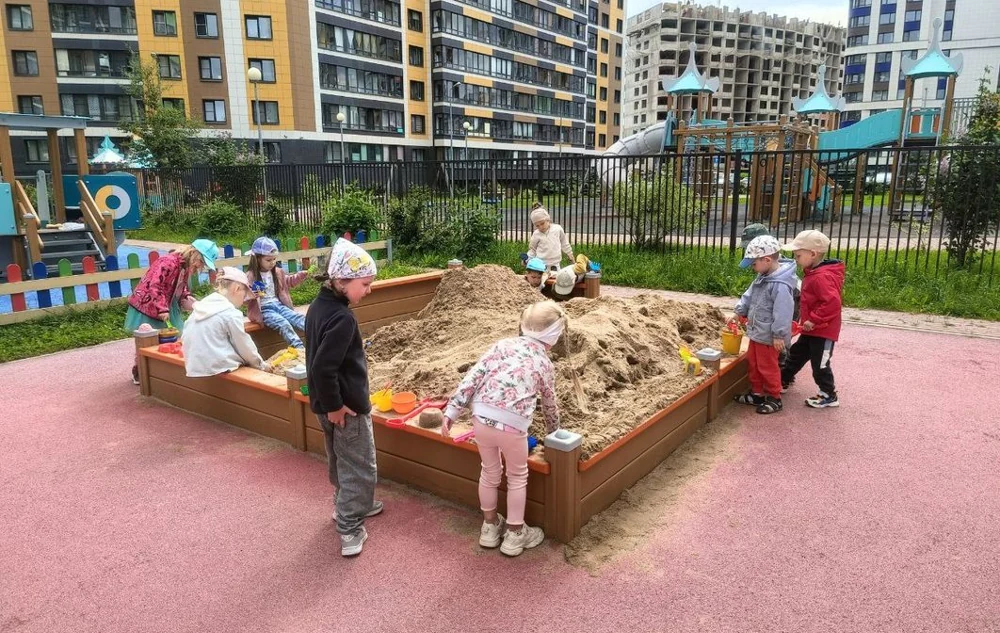

Малышам
Музыка с мамой, знакомство с садом и группа неполного дня.
Ленинградская область
В саду на Шувалова дети занимаются по программе «ПРОдетей», гуляют на собственной площадке и пробуют себя в студиях.

Музыка с мамой, знакомство с садом и группа неполного дня.
Рисование, студия танцев и LEGO-конструирование.
Занятия для детей от пяти лет. В саду также работают логопед и дефектолог.
Познакомьтесь с педагогами этого сада и узнайте, что рассказывают родители.
2ГИС